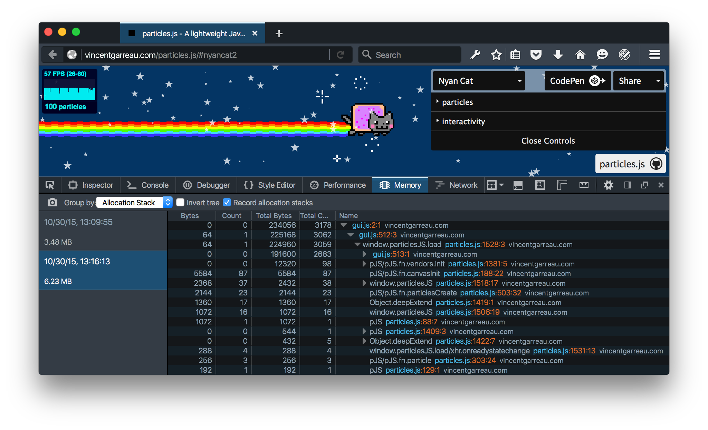
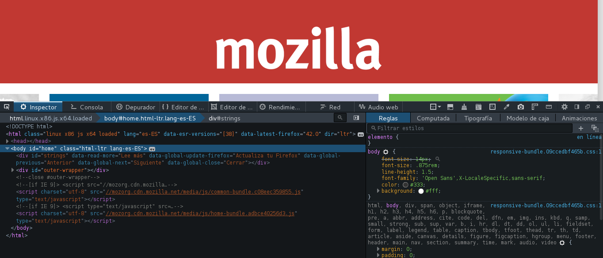
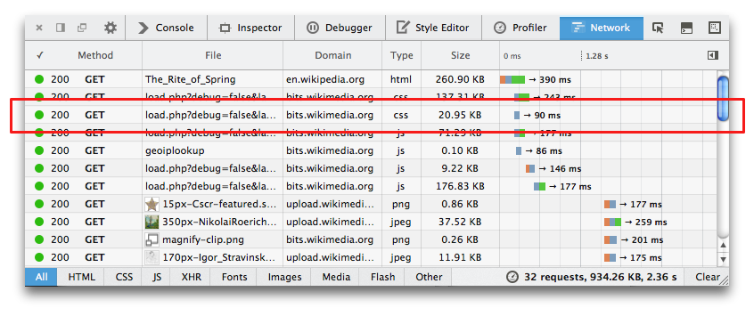
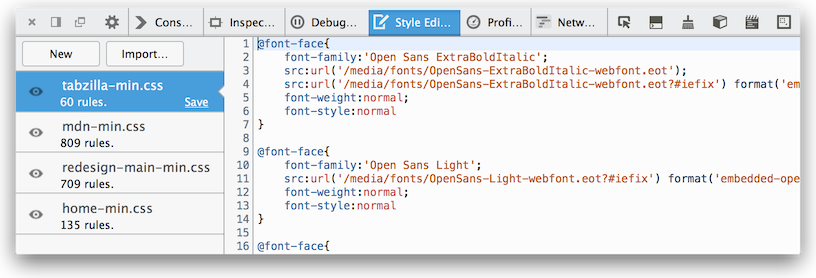
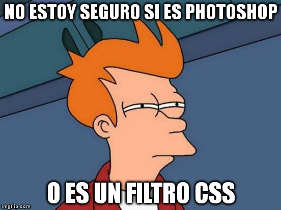

Firefox Developer Editon
Construido para los que construyen la web
Presentacion diseñada por Jose Suarez / @josexv1
Diseñado para desarrolladores
Firefox Developer Edition, el único navegador hecho exclusivamente para desarrolladores, ha sido creado teniendo muy en cuenta tu flujo de trabajo. Por fin puedes desarrollar, testar, escalar y mucho más desde el mismo lugar.
Instantaneas de memoria.
Analiza la frecuencia de imágenes, el consumo de memoria y el perfil JS de tus contenidos web en una vista cronológica sintetizada, que te permite identificar y resolver con facilidad los cuellos de botella en el rendimiento. Inspector de páginas
Analiza el HTML y las CSS de cualquier página web y modifica fácilmente su estructura y diseño.
Editor web audio
Inspecciona e interactúa en tiempo real con la API Web Audio y asegúrate de que todos los nodos de audio están conectados como tienes previsto.
Monitor de red
Observa todas las solicitudes de red que hace el navegador, el tiempo que tardan, y accede a toda la información de cada una de ellas.
Editor de estilos
Visualiza y edita estilos CSS asociados con una página web, crea estilos nuevos y aplica a cualquier página hojas de estilo CSS existentes.
Vista de diseño responsivo
Comprueba el diseño de tu sitio web o web app en distintos tamaños de pantalla sin tener que cambiar el tamaño de la ventana del navegador.
Herramientas de edición visual
Desde el panel Inspector, edita visualmente animaciones CSS y HTML mientras te diviertes jugando en la página. Comprueba la alineación, las dimensiones y el relleno de cualquier elemento con las herramientas Regla y Medida.
Filtros CSS y dulces
Embajador estudiantil Firefox
Jose Suarez
Twitter: @Josexv1
MH @Diffusive